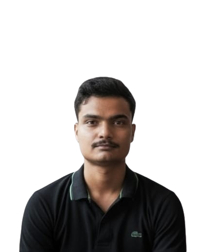
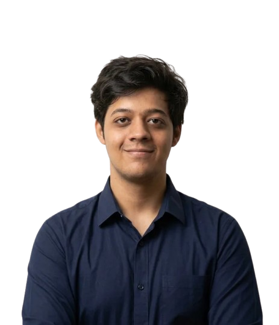

A deployable, fully offline search-and-rescue drone system built on Qualcomm edge compute. It plans its own search, detects victims on-board, and hands the incident commander a map of where people are.
Search speed is the single biggest determinant of how many people are found alive.
Towers and power fail early, so cloud-dependent and remotely-piloted drones lose their link exactly when they are needed most.
Drones stream video to a human, and hours of thermal feed will hide the person sitting in the frame.
Trained pilots are scarce and one pilot flies one aircraft, so coverage does not grow with the disaster.
The entire perception and navigation stack runs on a Qualcomm edge processor — no cloud, no ground link required.
The Qualcomm QRB5165 / RB5 platform runs detection, SLAM and path planning on the Hexagon NPU inside the airframe — no ground station, no LTE, no cloud.
Fused RGB, long-wave thermal and acoustic sensing finds people under debris, under canopy and in darkness, including partial occlusion where single-sensor models fail.
Given a polygon, the drone generates and continuously re-plans its coverage pattern, avoiding obstacles from onboard depth and SLAM rather than a pre-surveyed map.
Long-wave thermal picks up body heat through darkness, smoke and light debris; the visual camera confirms context and rejects false positives — one pass, day and night.
Not raw video: geo-tagged victim pins with confidence scores, triage priority and a live 3D site map, pushed to the incident commander the moment a drone re-enters mesh range.
| Compared on | Conventional SAR drone | Daksha |
|---|---|---|
| Connectivity | Needs a continuous RF or LTE link to a ground station | Flies the full mission offline; mesh is opportunistic, not required |
| Who finds the victim | A human operator watching a live video feed | On-board multimodal AI — the operator supervises rather than searches |
| Scaling | One pilot flies one aircraft | One operator supervises an N-drone swarm |
| Compute | Cloud inference or a GPU ground station | Edge NPU under 15 W, with no impact on endurance |
| What comes back | Hours of raw video to review | Geo-tagged victim map with confidence and triage priority |
16 NDRF battalions and SDRFs across 28 states are the mandated first responders for earthquake, flood and landslide search, procuring through NDMA and state budgets.
Army, ITBP and BSF run high-altitude and avalanche rescue where ground search is slowest and connectivity is nil — the sharpest fit for offline autonomy.
Remote plants, pipelines and mines carry statutory emergency-response duties. Private buyers, no tender, far shorter procurement cycles.
Maritime SAR for the Coast Guard, plus lost-trekker and wildfire response for state forest departments. Same airframe, retrained models.
Global public-safety, emergency-response and SAR drone market by 2030 (~USD 5.2 B), across hardware, payloads and mission software.
India-addressable slice: disaster-response and public-safety drone systems procurable by NDRF, SDRFs, paramilitary and municipal services.
Realistic 3-year capture: NDRF plus 6–8 state SDRFs and two paramilitary programmes, counting units, retrofit kits and subscriptions.
Figures are directional top-down estimates for grant review, to be validated with primary procurement quotes during the pilot phase.
Hardware wins the first order, the retrofit kit widens the funnel, and subscription plus support turn each deployment into recurring revenue.
Integrated airframe with the Qualcomm compute-and-sensor payload, sold per unit to agencies. Unit price and margin target [TBD].
Compute module, thermal and audio sensors as a bolt-on for drones agencies already own — larger installed base, shorter sales cycle.
Per drone, per year: model updates for new terrain and disaster types, mission planning, mapping and the commander dashboard.
Operator and supervisor courses for agency crews, priced per batch — attaches to nearly every unit sale as procurement norms tighten.
Post-warranty annual maintenance at a typical 12–18% of hardware value, plus spares — the annuity that compounds as the fleet grows.
Field pilot with one SDRF and one NDRF battalion under an MoU. Certified detection metrics captured in a live mock drill, so the evidence is third-party rather than a lab demo.
DGCA type certification, BIS and MeitY compliance, and a GeM listing so agencies can procure directly without an open tender.
Sell into 6–8 state SDRFs through state disaster-management budgets and NDMA schemes. Lead with the retrofit kit for the fastest entry.
Move into paramilitary and municipal fire services, and convert every pilot into an AMC plus subscription annuity.
Arpan and Aaditya lead the build end to end — airframe and on-board autonomy. The rest of the team carries research, integration, outreach and delivery.
Leads the team and owns the airframe: component selection, sensor mounting, power and assembly.

Builds the detection software and ports it to the Qualcomm NPU for real-time onboard inference.

Researches thermal and visual detection methods and validates accuracy on real field data.
Integrates autonomy, path planning and the ground interface, and runs flight testing.
Owns agency outreach, demos and pilot MoUs with NDRF and state disaster-response forces.
Runs schedule, budget and grant milestones, plus certification and compliance paperwork.
Only the search-and-rescue share is reachable by aerial search. That is the share Daksha is built for. Without the grant, the project stops at a slide deck. With it: a certified, field-proven unit ready for a first state order within 12 months.